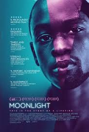
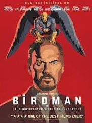
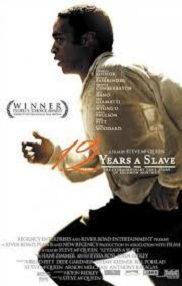
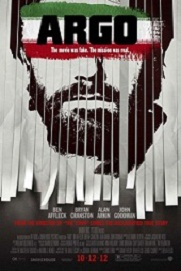

รางวัลออสการ์ สาขาภาพยนตร์ยอดเยี่ยม เป็นหนึ่งในรางวัลออสการ์หลายๆรางวัลที่มอบโดยสถาบันศิลปะและวิชาการทางภาพยนตร์ (AMPAS) รางวัลออสการ์สาขานี้เป็นรางวัลที่ยิ่งใหญ่และสำคัญที่สุดในงาน เนื่องจากภาพยนตร์ที่ได้รับรางวัลนี้ต้องเป็นภาพยนตร์ที่มีการผสมผสานที่ดีของการสร้าง การกำกับ การแสดง และการเขียนบท ดังนั้น สาขานี้จึงเป็นสาขาที่ยิ่งใหญ่ที่สุด ของรางวัลที่ยิ่งใหญ่ที่สุดในโลกภาพยนตร์ ภาพยนตร์ที่ได้รางวัลจึงถือเป็นเกียรติอย่างสูงสุด ผู้ที่ขึ้นรับรางวัลสาขานี้จะเป็นผู้กำกับหรือโปรดิวเซอร์ที่ภาพยนตร์เรื่องนั้นให้เครดิตอย่างเป็นทางการ โปสเตอร์ภาพยนตร์ทุกเรื่องที่ได้รับรางวัลนี้จะถูกติดไว้ที่บันไดทางขึ้นของโกดักเธียเตอร์ ในลอสแอนเจลิส
รางวัลออสการ์ สาขาภาพยนตร์ยอดเยี่ยม ตั้งแต่มีการมอบรางวัลมาได้มีการเปลี่ยนชื่อดังนี้
| ปี ค.ศ. | ชื่อภาพยนต์ | ใบปิด | ชื่อผู้กำกับ | ชื่อบริษัทภาพยนต์ |
|---|---|---|---|---|
| 2017 | Moonlight |  | Barry Jenkins | Plan B |
| 2016 | Spotlight | Tom McCarthy | Open Road Films | |
| 2015 | Birdman |  | Alejandro Gomzalez innaritu | Fox Searchlight |
| 2014 | 12 Years a Slave |  | Steve McQueen | Fox Searchlight |
| 2013 | Argo |  | Ben Affleck | GK Films |